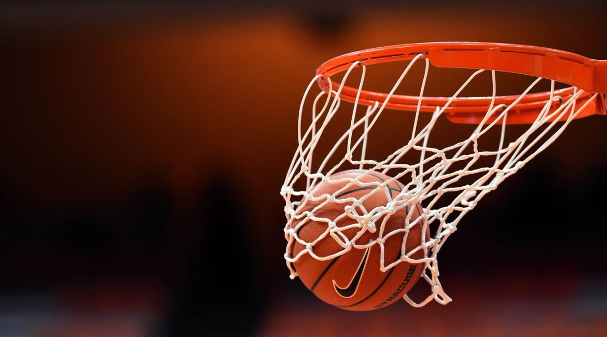

KOSZYKÓWKA
Moim hobby jest gra w koszykówkę. Uprawiam ten sport od 4 lat. Należę do klubu koszykarskiego w Warszawie. Wraz z moimi koleżankami z drużyny byłam na Mistrzostwach Polski, na których zajęłyśmy 8.
Koszykówka jest to bardzo wymagający sport pod względem fizycznym, ponieważ jest to wysiłkowy sport i nie ma w nim czasu na rozpamiętywanie poprzednich akcji, bo już się dzieje następna. W koszykówce najważniejsza jest obrona. Trudno jest zmobilizować się do systematyczności w chodzeniu na treningi. W moimi roczniku mamy 3 razy w tygodniu trening po 2 godziny, w weekendy gramy mecze ligowe, a raz w tygodniu basen przez godzinę.
Jeśli wygramy wszystkie ómecze w lidze i będziemy pierwsze na Mazowszu, przechodzimy do ćwierćfinałów Mistrzostw Poslki. W czasie wolnym chodzę na mecze Legii w koszykówkę, ale moim marzeniem jest pojechanie na mecz NBA.
Żeby mieć energię na meczach i na treningach trzeba się dobrze odżywiać, czyli jeść dużo węglowodanów, w postaci słodyczy oraz owoce i warzywa. Wynalazcą koszykówki jest James Naisaith. Wynalazł ją w 1891 roku.
Zdaję sobie sprawę, że są inne sporty, np. siatkówka, lekkoatletyka, piłka nożna lub piłka ręczn, ale według mnie koszykówka jest najlepsza. Grę w koszykówkę można zacząć w każdym wieku, wiadomo im wcześniej tym lepiej, ale znam paru zawodowych koszykarzy, którzy zaczęli swoją przygodę z koszykówka powyżej 18 roku życia. Przez koszykówkę możesz zawrzeć nowe znajomości oraz przeżyć fajną przygodę. Niestety u nas na Mazowszu nie ma zbytnio rozwiniętych klubów. Jeśli chcesz grać to najlepiej na pomorzu (politechnika Gdańska lub gdynia) lub we Wrocławiu, ale jak się będziesz starć to w Warszawie też możesz grać dobrze w koszykówkę. Koszykówka jest suuper.
koszykówka jako pasja